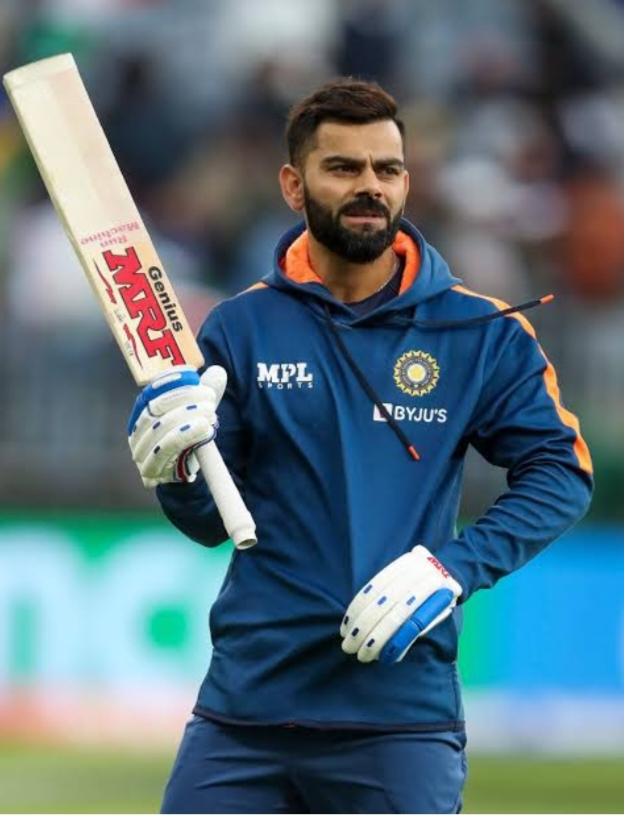

Virat Kohli

King Kohli
- Virat born in delhi in 5,nov 1988.
- Virat was 35 year old.
- Virat role was top order batsman.
- Virat was break the record of sachin tendulkar.
-
Virat was 50th century for team india.
- Virat's wife name is Anushka kohli.
-
Virat announced to his retirement after won ICC mens t20 World Cup 2024.